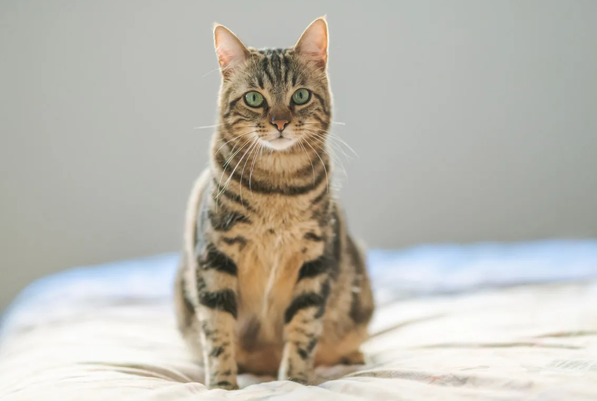

Almendra
Hembra
Muy mimosa - Dormilona - De buen comer
Oso
Macho
Guardían - Cariñoso - Bueno con otros animales

Maya
Hembra
Se lleva bien con perros - Independiente - Hace sus necesidades donde debe
Muy mimosa - Dormilona - De buen comer
Guardían - Cariñoso - Bueno con otros animales
Se lleva bien con perros - Independiente - Hace sus necesidades donde debe